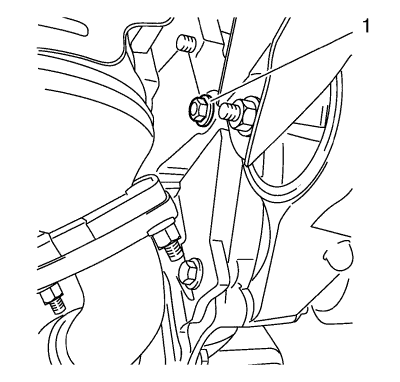
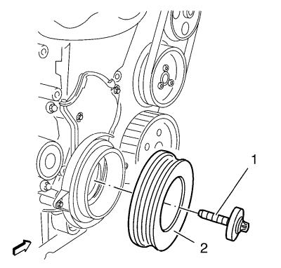

Sustitución de la tapa inferior delantera de la correa de distribución
Herramientas especiales
EN 6625 Herramienta de ajuste del cigüeñal
Si desea informarse sobre herramientas regionales equivalentes, consultar Herramientas especiales .
Procedimiento de desmontaje
- Abra el capó.
- Suba el vehículo a la altura máxima. Consultar Elevación y soporte en alto del vehículo .
- Retirar el protector de salpicaduras del habitáculo frontal. Consultar Sustitución del protector de salpicaduras del habitáculo frontal .
- Desmonte el tensor de la correa del generador y del compresor del aire acondicionado. Consultar Sustitución del dispositivo tensor de la correa de accionamiento

- Desmonte el tornillo (1).

- Monte la herramienta de ajuste EN 6625 (2) para bloquear el cigüeñal.
- Monte el tornillo (1).

- Quite el tornillo (1) del compensador del cigüeñal.
- Desmonte el compensador del cigüeñal (2).
- Desmonte los 4 tornillos de la tapa inferior de la correa de la distribución (2).
- Desmonte la tapa inferior de la correa de la distribución (1).
Procedimiento de montaje
Precaución:Consulte Precaución con las fijaciones en la sección Prólogo.
- Monte la tapa inferior de la correa de la distribución (1).
- Monte los 4 tornillos inferiores de la tapa de la correa de distribución (2) y apriételos a 6 N·m (54 lib. pulg.).
- Monte el compensador del cigüeñal (2).
- Monte el tornillo nuevo del compensador del cigüeñal (1) y apriételo a 95 N·m (71 lib. pie) + 30° + 15°.
- Desmonte el tornillo y la tuerca (1).
- Desmonte la herramienta de ajuste EN 6625 (2) para bloquear el cigüeñal.
- Monte y apriete el tornillo (1) a 75 N·m (56 lib. pie).
- Monte el tensor de la correa del generador y del compresor del aire acondicionado. Consultar Sustitución del dispositivo tensor de la correa de accionamiento
- Monte el protector contra salpicaduras del compartimento delantero. Consultar Sustitución del protector de salpicaduras del habitáculo frontal .
- Baje el vehículo a la altura máxima.
- Cierre el capó.
| © Copyright Chevrolet. Reservados todos los derechos |